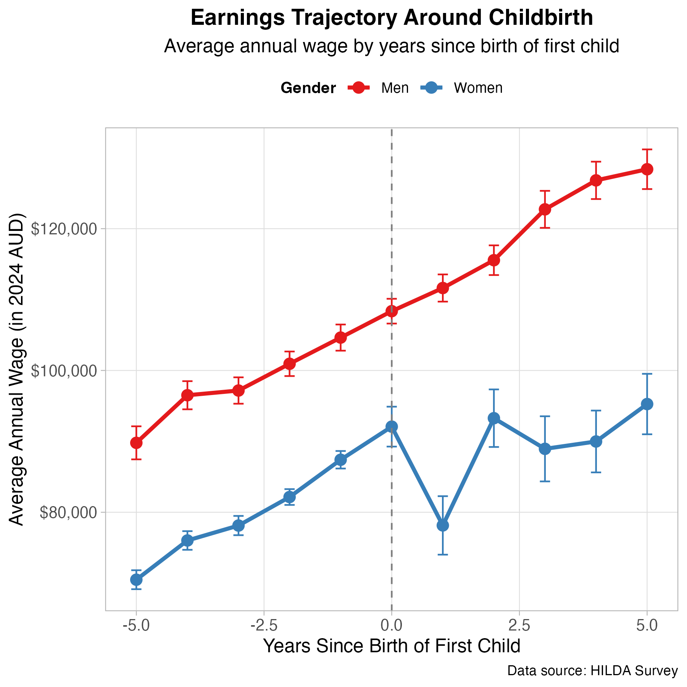

Having children changes everything. This often includes our relationship with work. While the personal adjustments of parenthood are well documented, we're only starting to understand how parenthood shapes long-term career trajectories.
What the Data Show: Parenthood, Gender, and Income
We used data from the HILDA survey to track wages from 3,546 men and women in full-time work in the years before and after they became parents. All earnings are adjusted to 2024 dollars.

Men's earnings show a steady upward trend through the transition to parenthood. Women's earnings rise before the child, peaking around the birth year, then drop sharply in the year after childbirth, and only partially recover in subsequent years. Even five years later, mothers on average earn significantly less than fathers, and the gap is larger than it was before children.
In our data, fathers were earning about 30% (approximately $30k) more per year on average than mothers by five years after becoming a parent — a much larger gap than the one prior to parenthood. One Australian study found that in the five years following childbirth, women's total earnings were 55% lower on average than they would have been otherwise, while men's earnings were not significantly affected.
Importantly, this isn't just due to mums working part-time or taking time out. Even among women who maintain full-time employment, the penalty persists.
Implications for Employers and Policy Makers
Support working mothers with flexibility: Organisations that want to retain talented women need to make it feasible for new mothers to stay and progress. This includes offering truly flexible work arrangements, hybrid/remote options, and robust parental leave. Critically, it also means providing or subsidising childcare support, because affordable childcare is often key for a mother's ability to continue her career.
Encourage and normalise paternity leave: One way to address this "motherhood penalty" is to balance the load. When fathers take substantial parental leave and share caregiving responsibilities, it can improve the mother's transition back to work. Organisations should not only offer paternity leave but also actively encourage men to use it.
Re-evaluate advancement and pay practices: Organisations must ensure that having a child does not derail a high performer's career. Review your promotion and raise cycles with an eye on new parents — are you inadvertently overlooking someone because they had a few months away or came back on reduced hours temporarily?
The bottom line is to proactively counteract the loss of visibility and opportunities that often hits new mothers. By intentionally supporting their career growth, employers can mitigate the long-term wage penalty these women would otherwise face.